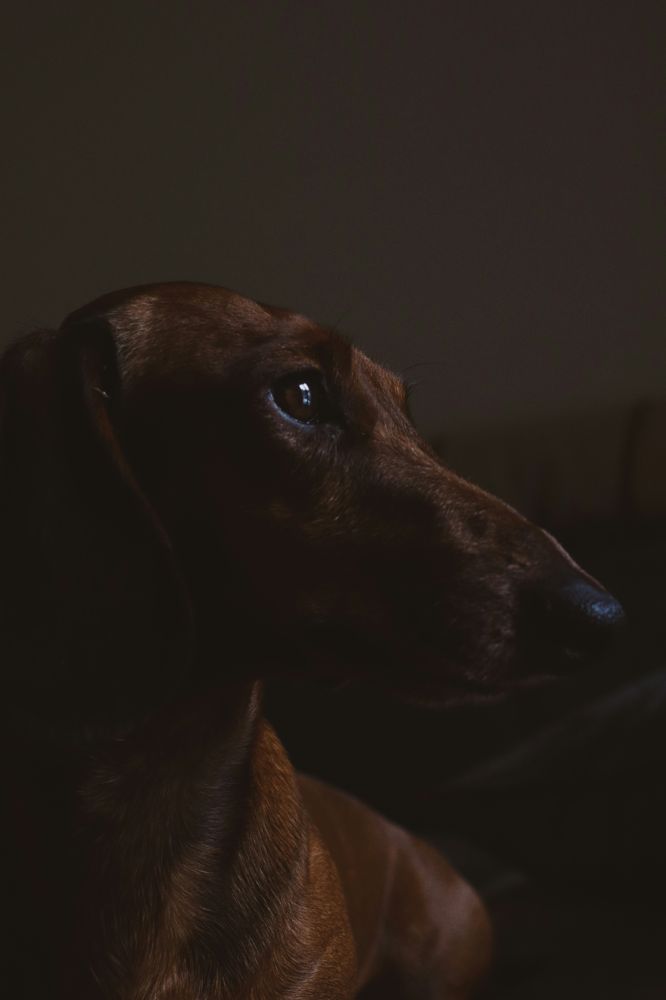

Turin · Italy
Federico Garaffi
Photography
Scroll to explore ↓
01 / Selected work
Quiet geometry,
light, color & moments.


02 / Approach
I photograph the details that make ordinary places feel unfamiliar.
03 / About
Behind the camera.
I’m Federico Garaffi, a photographer based in Turin, Italy. My work focuses on architecture, atmosphere, color and the small details that give a place its identity.
This portfolio is a selection of the images I want to be remembered by.
04 / Contact
Let's makesomething.